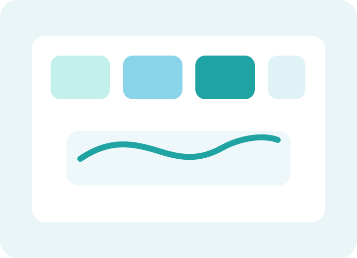

Sample Log
Medication: Am-dose 20 mg
08:00 AMDose taken with breakfast.
11:20 AMMild nausea reported.
03:10 PMHeadache increased from 2/10 to 5/10.
08:40 PMSymptoms eased after hydration and rest.
Tracking
Use this sample workflow to see how Reactztrazk organizes dose timing, symptom severity, and AI review notes.

Sample Log
AI Summary
Reactztrazk highlights that symptoms emerged hours after dosing, peaked mid-day, and reduced later in the evening, creating a clearer record for treatment review.